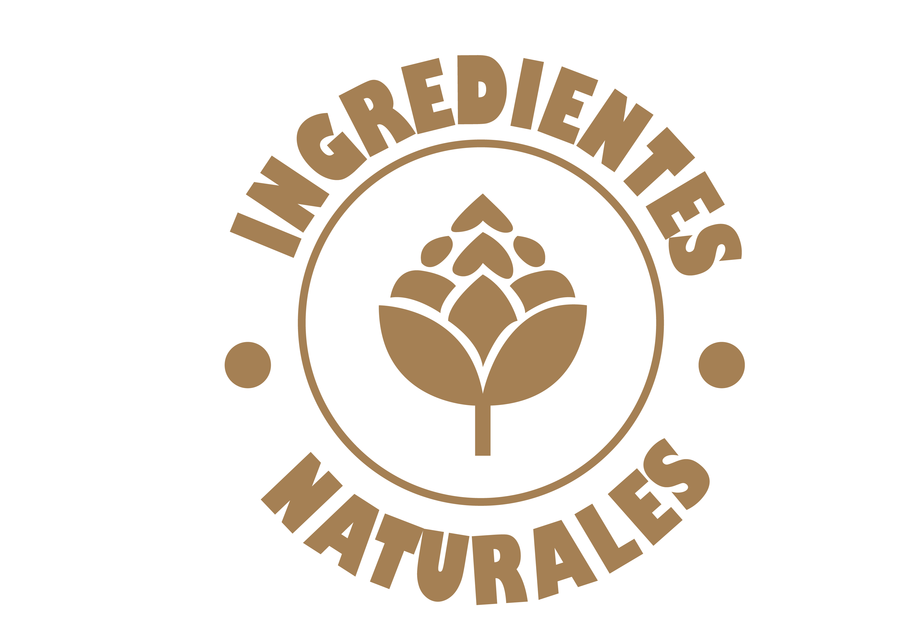
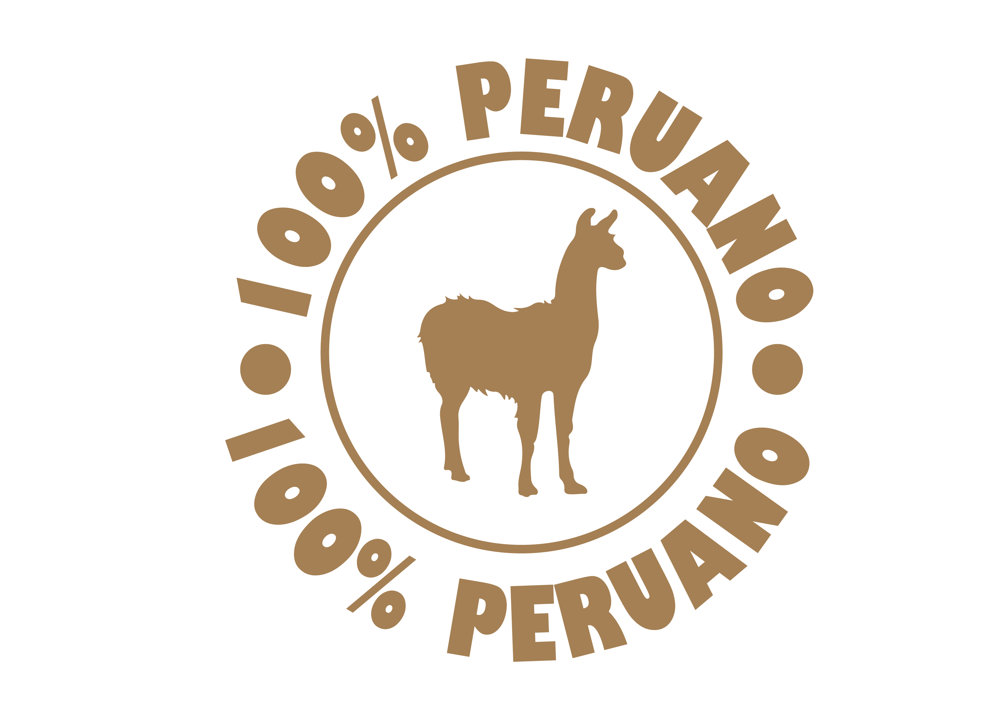
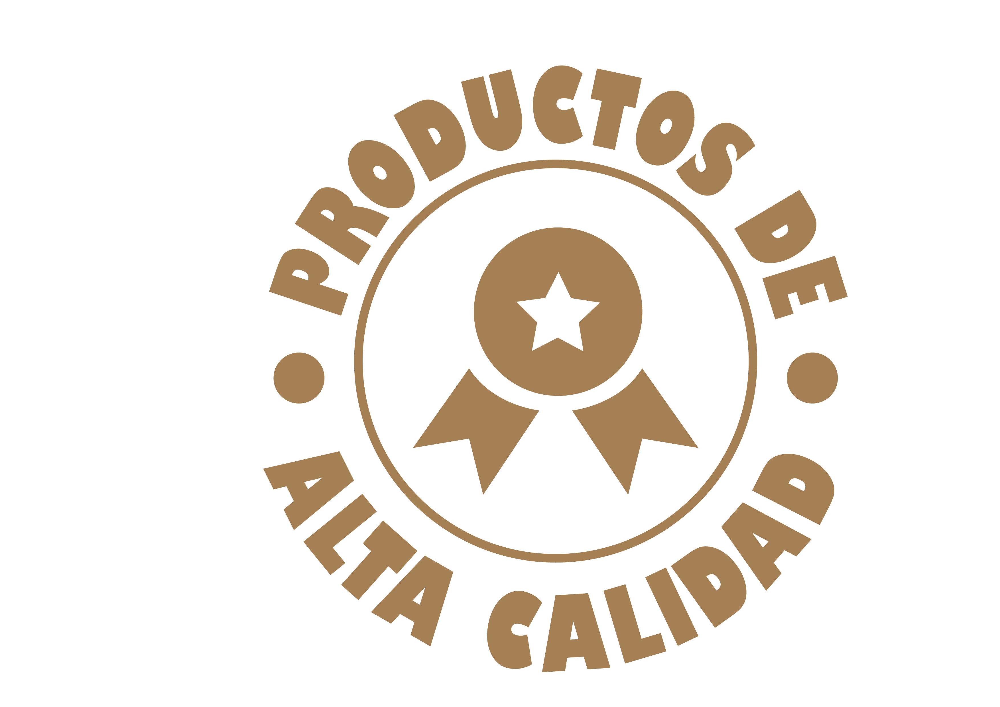

En Mallki elaboramos nuestras cervezas utilizando únicamente ingredientes 100% naturales. No
añadimos preservantes ni colorantes. Nuestra receta se basa en cebada, lúpulo, agua y
levadura, garantizando un sabor puro y auténtico, con opciones también sin alcohol para
todos los gustos.

Orgullosamente elaborada en Oxapampa, Mallki representa la tradición y frescura peruana. Es
una cerveza que honra los sabores locales y ofrece una alternativa sin alcohol con la misma
autenticidad que una cerveza tradicional.

En Mallki, cada paso de la elaboración es supervisado por un equipo comprometido con la
excelencia. Nuestra prioridad es brindar una cerveza segura, deliciosa y equilibrada, ideal
para quienes buscan lo mejor, con o sin alcohol.